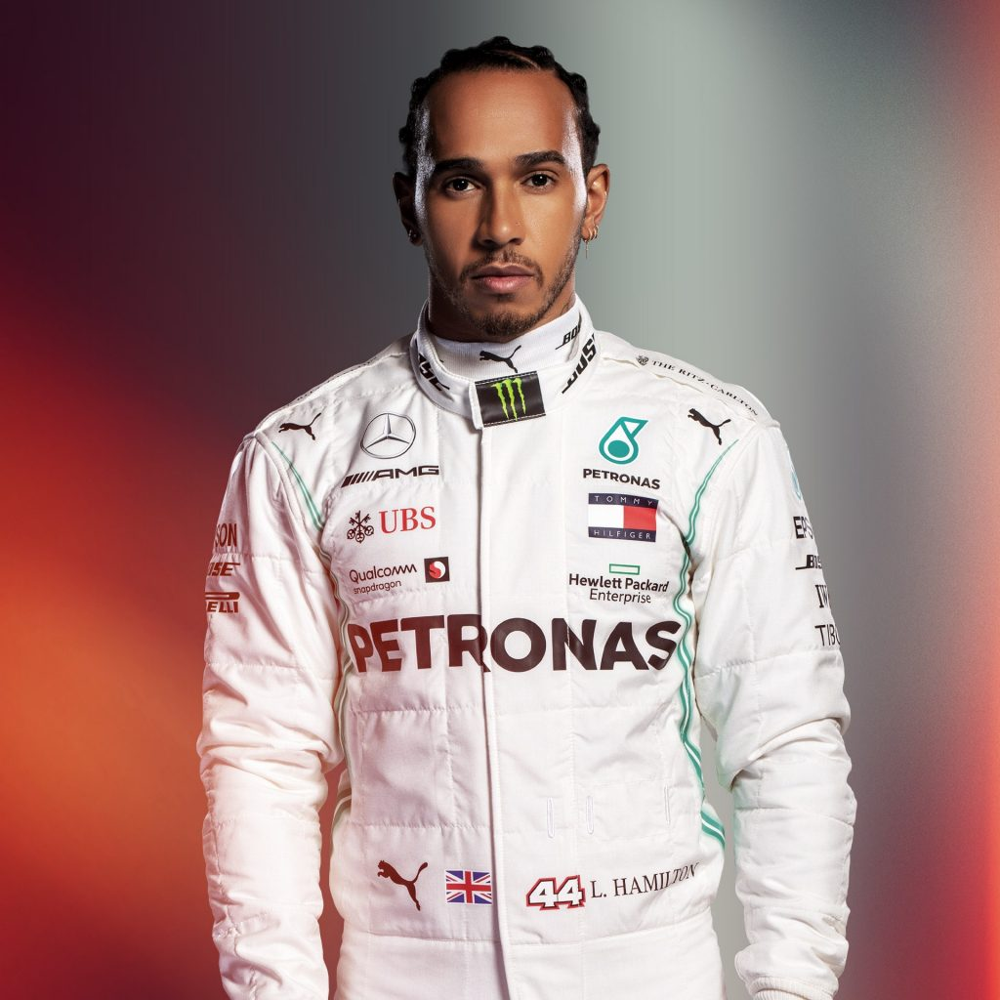

Льюис Хэмилтон
Льюис Хэмилтон – британский гонщик «Формулы-1», пилот команды «Мерседес», пятикратный чемпион мира 2008, 2014, 2015, 2017 и 2018 годов. Считается одним из лучших гонщиков за всю историю Формулы-1.
Дата рождения: 07/01/1985
Место рождения: Стивенидж, Великобритания
Количество проведённых гонок: 233
Подиумы: 134
Количество побед: 73
Хэмилтон родился в Стивенидже, Хартфордшир. В декабре 1995 года, в возрасте 10-ти лет он попросил автограф у босса команды McLaren Рона Денниса, и сказал ему: «Привет. Я Льюис Хэмилтон. Я выиграл британский чемпионат и однажды буду гоняться за рулём вашего болида». Через три года Деннис заключил с ним контракт программы поддержки молодых пилотов McLaren. После побед в Британской Формуле-Рено, Евросерии Формулы-3, и GP2 Хэмилтон дебютировал в Формуле-1, за команду Vodafone McLaren Mercedes. Контракт Хэмилтона с программой поддержки пилотов McLaren сделал его самым молодым пилотом, который получил гарантированное место в Формуле-1.
Льюис Хэмилтон стал первым темнокожим пилотом в Формуле-1 (хотя был Уилли Ти Риббс (англ.)русск., который тестировал болид в 1986 году) и стал первым темнокожим пилотом, кто смог одержать победу на трассе Индианаполис Мотор Спидвей в любой дисциплине.
В своём первом сезоне в Формуле-1, Хэмилтон установил множество рекордов, он стал вице-чемпионом своего дебютного сезона 2007, в котором проиграл всего одно очко чемпиону Кими Райкконену, зато на следующий год он стал чемпионом. Обладатель Премии имени Лоренцо Бандини и Памятного трофея Майка Хоторна. В 2014 году был признан спортсменом года по версии BBC. На данный момент является единственным гонщиком в истории Формулы-1, кому удавалось одерживать победы во всех проведённых сезонах подряд, начиная с дебютного. С 2007 по 2012 годы выступал за команду Vodafone McLaren Mercedes, с 2013-го — гонщик команды Mercedes AMG Petronas F1 Team.
В 2014 году по итогам голосования журнала «RaceMag» Хэмилтон был признан самым невезучим гонщиком, выступавшим в «Формуле-1» за последние двадцать лет, рейтинг составлялся по общему количеству Гран-при, в которых гонщик мог бы одержать победу, но по каким-либо причинам (например: заминка на пит-стопе, механический сход) не смог сделать этого.